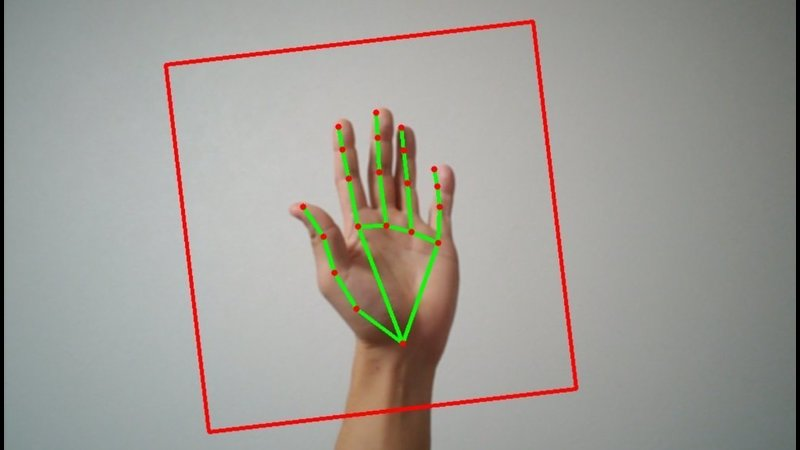

1
Captura
La cámara obtiene el video en tiempo real de tus manos.
Capturamos tus gestos con la cámara, detectamos puntos clave de la mano con MediaPipe, procesamos con OpenCV y comparamos con nuestro dataset para traducir en tiempo real.

Así transformamos tus señas en letras visibles en pantalla con fluidez y precisión.
La cámara obtiene el video en tiempo real de tus manos.
MediaPipe detecta ~21 puntos clave por mano (landmarks) y su movimiento.
OpenCV limpia y normaliza la señal visual para interpretar mejor la pose.
Comparamos con nuestro dataset y mostramos la letra reconocida al instante.
// Esquema conceptual (pseudocódigo)
frame = camera.read()
landmarks = mediapipe.detect_hands(frame)
features = opencv.preprocess(landmarks)
letra = modelo.predict(features) // o comparación directa con dataset
ui.render(letra)
No, con la cámara web estándar funciona sin problema. En móvil también es posible usar tanto la cámara frontal como la trasera. El sistema está pensado para adaptarse a dispositivos comunes, sin necesidad de equipos especializados.
Pedimos disculpas: de momento nuestro proyecto se encuentra en una fase pre-beta, y por ahora nuestra base de datos (dataset) trabaja únicamente con el abecedario. Esto se debe a que estamos mejorando el modelo de detección y predicción con inteligencia artificial para garantizar precisión y estabilidad. Una vez logrado ese nivel, daremos el salto hacia la detección de gestos completos y señas básicas de la Lengua de Señas.
Todo el procesamiento se realiza de manera local, respetando la privacidad del usuario en todo momento. Tanto el software de PC como la app móvil funcionan completamente en el dispositivo del usuario. Únicamente la versión demostrativa, disponible en línea, procesa temporalmente los datos, siempre de forma anónima y opcional.
Buscamos colaboradores, testers y personas que usen LSM.
Contactar al equipo